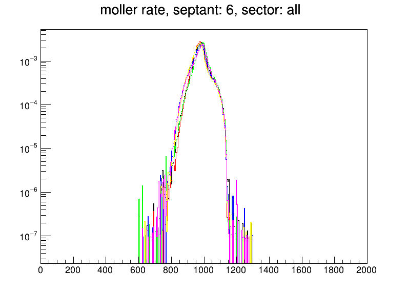

Spectrometer Studies Update
Sakib Rahman
April 24, 2020
Simulation and Geometry
- 5 million events each for moller, elastics and inelastics
- 5x5 mm raster, 0.065 mrad/mm angular correlation
- Kryptonite Shielding
Field Maps
- HybridJLAB
- HybridJAB Symmetric Radial Offset
- HybridJLAB Asymmetric
- SegmentedJLAB
- SegmentedJLAB Symmetric Radial Offset
- SegmentedJLAB Asymmetric
All Septants (MOLLER)
 |
 |
 |
All
Radius vs Theta Distribution
Septant4
All